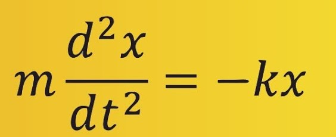

Un bloque suspendido de un resorte se denomina sistema masa-resorte. Para obtener un sistema masa-resorte, consideramos una masa m. Se supone que la masa se desliza a lo largo de una superficie sin enfrentar fricción. El resorte está suspendido de una pared por un extremo. Luego, la masa está suspendida del extremo libre de un resorte.
Integrantes:
En un sistema masa-resorte, el periodo es proporcional a la raíz cuadrada de la masa e inversamente proporcional a la raíz cuadrada de la constante del resorte. La amplitud es la distancia máxima entre la masa y la posición de equilibrio.
En un sistema masa-resorte, la energía potencial es máxima en los extremos del movimiento, mientras que la energía cinética es máxima en la posición de equilibrio. La energía mecánica es constante en todo el movimiento.
Según la ley de Hooke, la fuerza restauradora del resorte es proporcional al desplazamiento y actúa en sentido contrario al desplazamiento, por lo que la fuerza restauradora viene dada por:
−k(s+x).
La constante del resorte se indica en libras por pie en el sistema inglés y en newtons por metro en el sistema métrico.
El estudio de los sistemas masa-resorte es fundamental en la mecánica clásica y tiene aplicaciones en diversas áreas de la física y la ingeniería. Este sistema describe el movimiento armónico simple (MAS) de un objeto bajo la acción de fuerzas restauradoras elásticas, lo que permite analizar fenómenos vibratorios y oscilatorios.
La Ley de Hooke establece que la fuerza restauradora F que actúa sobre un objeto en un resorte es proporcional al desplazamiento x respecto al punto de equilibrio y se expresa como:
F = − k x
Este principio es crucial para definir el comportamiento oscilatorio de sistemas masa-resorte. El movimiento resultante, conocido como Movimiento Armónico Simple (MAS), es descrito por ecuaciones diferenciales de segundo orden que relacionan la posición, la velocidad y la aceleración del objeto en función del tiempo.
El sistema masa-resorte sin amortiguamiento se modela mediante la ecuación diferencial:
La solución de esta ecuación es una función oscilatoria que puede expresarse en términos de funciones seno y coseno, caracterizando un movimiento periódico con una frecuencia angular ω=km.
La transformada de Laplace es una herramienta matemática que se utiliza para resolver ecuaciones diferenciales con condiciones iniciales. En el análisis de sistemas masa-resorte, se emplea para simplificar la ecuación diferencial, transformándola en una ecuación algebraica en el dominio de s, facilitando así la solución.
Al aplicar la transformada de Laplace a la ecuación del sistema masa-resorte, se obtiene una representación que permite resolver para la posición x(t) y la velocidad v(t) mediante la transformada inversa. Este método es valioso en el análisis de sistemas mecánicos y eléctricos, ya que proporciona un enfoque sistemático para manejar problemas complejos de oscilación y amortiguamiento.
El comportamiento del sistema depende de las condiciones iniciales, como la posición inicial x(0) y la velocidad inicial v(0). Estas condiciones determinan la amplitud y la fase del movimiento oscilatorio. En problemas prácticos, como el expuesto en el documento, se calcula la constante del resorte utilizando las condiciones de equilibrio, y se predicen la posición y la velocidad del objeto en instantes específicos usando las soluciones obtenidas.
Un resorte cuelga verticalmente con su extremo superior fijo, y de su extremo inferior cuelga un objeto de masa 15 kg. Cuando el sistema alcanza el equilibrio, el resorte se ha estirado 61 cm debido al peso del objeto. Luego, se estira el objeto hasta una posición 40 cm por debajo del punto de equilibrio y se suelta, permitiendo que el objeto oscile libremente.
Del problema tenemos los siguientes datos:
Un resorte cuelga verticalmente; su extremo superior está fijo y del inferior pende una caja que pesa 196 N. Una vez en equilibrio, se tira de la caja hacia abajo haciéndola desplazar 0.25 m y se suelta. Sabemos que:
Queremos encontrar:
Del problema tenemos:
El análisis del sistema masa-resorte expuesto en este estudio resalta la importancia de las leyes fundamentales de la física, como la Ley de Hooke y el Movimiento Armónico Simple, en la comprensión de fenómenos oscilatorios. A través de la aplicación de principios matemáticos y físicos, como las ecuaciones diferenciales y la transformada de Laplace, se puede obtener una descripción precisa del comportamiento dinámico del sistema.
En particular, la solución de los problemas permitió determinar parámetros esenciales, como la constante de elasticidad del resorte y las características de la oscilación del objeto (posición y velocidad en instantes específicos). Esto ilustra la utilidad práctica de las herramientas matemáticas para resolver problemas complejos y predecir el comportamiento de sistemas físicos.
Al calcular la constante de elasticidad k, determinamos que el resorte responde de manera proporcional al peso del objeto. Este valor es fundamental para entender la rigidez del resorte y su capacidad para soportar cargas adicionales sin deformarse permanentemente.
Estos ejercicios no solo demuestra principios fundamentales de la física, como la ley de Hooke y el movimiento oscilatorio, sino que también destaca la importancia de los cálculos precisos en la predicción del comportamiento de sistemas mecánicos.
Finalmente, este tipo de análisis es crucial en diversas aplicaciones de ingeniería y tecnología, donde se requiere un control preciso de las vibraciones y la estabilidad estructural. La comprensión y el modelado de sistemas oscilatorios contribuyen al desarrollo de soluciones eficientes en campos como la mecánica, la acústica, y la ingeniería estructural.